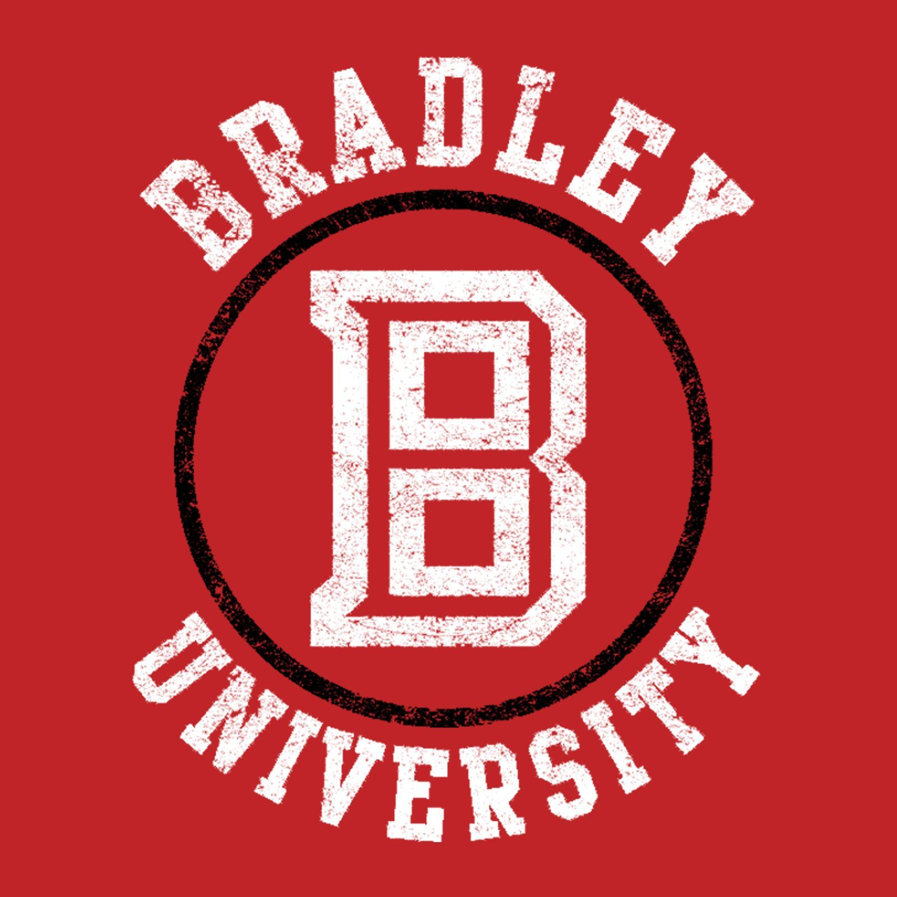

Educational History
August 2014 – May 2018
East Peoria Community High School
- 3.8 GPA
- 1330 SAT -> 680 Reading, 650 Math
- 3 AP classes
August 2018 – May 2020
Illinois Central College
- 3.75 GPA
- Dean's List
- Associate of Business Administration (ABA)
August 2020 – Present
Bradley University

- 3.5 GPA
- Computer Science Major